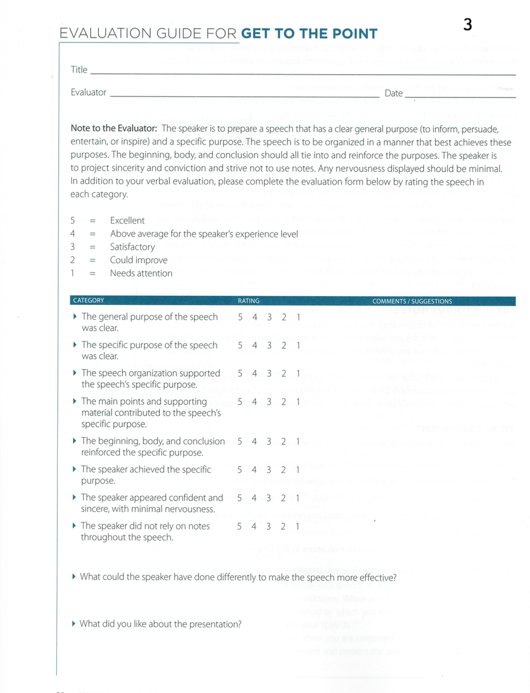

<!-- Main -->
	<div id="main" class="wrapper style1">
		<div class="container">
			<section>
				<div class="10u -1u">
					<header class="major">
						<!-- <h2>Blog</h2> -->
						<!-- <span class="byline">Integer sit amet pede vel arcu aliquet pretium</span> -->
					</header>
					<h2>What is this speech about ?</h2>
					<ul>
						<li>Every speech must have a general and a specific purpose. </li>
						<li>A general purpose is to inform, to persuade, to entertain or to inspire. </li>
						<li>A specific purpose is what you want the audience to do after listening to your speech.</li>
						 <li>Once you have established your general and specific purposes, you’ll find it easy to organize your speech. </li>
					<li>You’ll also have more confidence, which makes you more convincing, enthusiastic and sincere. </li>
						<li>Of course, the better organized the speech is, the more likely it is to achieve your purpose. </li>
</ul><br>
<h2>Objectives</h2>
<ul>
<li>Select a speech topic and determine its general and specific purposes.</li>
	 <li>Organize the speech in a manner that best achieves those purposes.</li>
	 <li>Ensure the beginning; body and conclusion reinforce the purposes.</li>
	 <li>Project sincerity and conviction and control any nervousness you may feel.</li>
	 <li>Strive not to use notes.</li>
	 <li>Time: Five to seven minutes.</li>
</ul><br>
<h2>Evaluation</h2>
Download: <a href="Evaluation3.pdf"></a>
	<br>
	<h2>Videos</h2>
	<p align="center">
		<iframe height="500"
		src="https://www.youtube.com/embed/DcSbpKIWPHI">
		</iframe>
		<iframe height="500"
		src="https://www.youtube.com/embed/HfRJg_4Xqkw">
		</iframe>
	</p>
	<h2>More Resources</h2>

		<li><a href="Get_to_the_point.pdf">Resource From Toastmasters</a></li>
		<li> <a href="http://sixminutes.dlugan.com/speech-evaluation-2-art-of-delivering-evaluations/">Art of Delivering Evaluations</a></li>
		<li><a href="http://sixminutes.dlugan.com/toastmasters-speech-3-get-to-the-point/">An unofficial guide to speech 3</a></li>


				</div>
			</section>
		</div>
	</div>
